Only the steps for your choice are shown.
MK8DX at home or at your club — manual
This manual takes you step by step from an empty computer to a played evening. You do not need any IT knowledge. Read the chapters in order; each chapter builds on the previous one.
Honest note first: the home and club installation is still a test version. The package calls itself an "A2 OFFLINE QA CANDIDATE" in README-FIRST.txt: meant for a test computer, not yet a fully approved route. Windows 11 is the most tested. Linux has not been tested end to end yet. macOS has not been tested on a real Mac yet. Wherever something is not tested or not built yet, the step says so.
How to read a step: after Do comes what you do, after You see what should happen then, and after See something else? what to do in that case. Words in bold are buttons or texts you see exactly like that on the screen.
1. What is MK8DX at home or at your club, and what do you need?
MK8DX is a website for Mario Kart 8 Deluxe: keeping and comparing Time Trials, LiveTrial recordings and tournament nights. With this installation the website runs on one computer in your own network. Phones, tablets and other computers on the same network open the website through that computer. Nothing goes to the internet.
Everyone signs in with a personal sign-in card: a card with a QR code. A QR code is a square barcode you scan with the camera of your phone or tablet.
In this manual the computer that runs MK8DX is called the MK8DX computer.
What you need:
- One computer that stays on while people play: Windows 11 with an Intel or AMD processor, Linux or macOS. 8 GB of memory is recommended. The setup checks that at least 6 GB of disk space is free.
- A home network: the Wi-Fi or the network cables of your router. A router is the box that makes your network (often from your internet provider). All devices must be on the same network. Do not use a guest network: it usually keeps devices apart.
- Phones, tablets or other computers for the players, preferably with a camera to scan QR codes.
- A printer is handy for printing sign-in cards and the recovery code, but not required.
What you do not need:
- No internet while playing. Only while preparing do you download Docker, Python and the MK8DX package once (or someone gives them to you on a USB stick).
- No account with another company, no email address and no cloud.
- No subscription. MK8DX and Python are free. Docker Desktop is free for personal use and small organizations; the terms are on Docker's website. On Linux you use the free Docker Engine.
2. Preparing the computer
MK8DX needs two free helper programs:
- Docker runs programs in shielded "containers". The MK8DX website and database run in those. On Windows and macOS the program is called Docker Desktop.
- Python is a programming language. The MK8DX installer is written in it. You need Python 3.12 to 3.15.
Do only the part for your computer (2A, 2B or 2C) and skip the other two.
2A. Preparing Windows 11
- Do check which processor your computer has: Start → Settings → System → About, line System type.You see "64-bit operating system, x64-based processor".See something else? If it says ARM, the MK8DX Windows package does not fit: it exists only for x64 (Intel and AMD).
- Do first install WSL (Windows Subsystem for Linux). It is a part of Windows that Docker runs on; without WSL, Docker Desktop cannot install. Right-click the Start button and choose Terminal (Admin) or Windows PowerShell (Admin). Click Yes when Windows asks for permission. Type
wsl --installand press Enter.You see Windows downloads and installs WSL and Ubuntu; this takes a few minutes. At the end it says you must restart the computer. Restart the computer.See something else? If a window opens after the restart asking for a user name and password for Ubuntu: enter a name and password of your choice (MK8DX does not need them) and then close the window. If it says WSL is already installed, typewsl --updateand press Enter. If it mentions virtualization ("Virtual Machine Platform" or "virtualization"), virtualization is turned off in the computer's BIOS; turn it on (manufacturers often call it Intel VT-x or AMD-V) or ask for help. - Do download Docker Desktop for Windows (x86_64 / AMD64) from docker.com and open the downloaded file.You see the Docker installer with the choice to use WSL 2. WSL is a part of Windows that Docker runs on. Leave that choice ticked and click OK.See something else? If Windows asks whether this app may make changes, click Yes.
- Do wait until the installation is finished and restart the computer if Docker asks for it.You see after the restart Docker Desktop opens (or open it yourself from the Start menu). The first time, Docker asks you to accept its terms.See something else? If Docker asks you to sign in or create an account: MK8DX does not need a Docker account, skip it if Docker offers that. If Docker still says WSL is missing or must be updated, do step 2 again (
wsl --installorwsl --update) and restart. - Do wait in the Docker Desktop window.You see Engine running at the bottom left.See something else? "Engine starting" can take a few minutes. If it hangs or shows an error, restart the computer and open Docker Desktop again. Docker must be in the normal Linux-containers mode (not "Windows containers").
- Do go to python.org → Downloads and download the Python install manager for Windows (the file ends in
.msix). This is now the official way to install Python on Windows. Open the downloaded file and click Install.You see Windows installs the Python install manager; you can then close the window.See something else? You can also install it from the Microsoft Store: search for "Python install manager" and click Install. Use one of the two, not both. - Do click Start, type
PowerShell, open Windows PowerShell, typepy install 3.15and press Enter. This installs Python itself (the install manager is only the tool that fetches Python).You see the first time a few questions to check the settings; answer them with Enter (the suggested choice) ory. Then Python is downloaded and installed. A question about adding a folder to your PATH may be answered withy; it is not required.See something else? Install exactly 3.15 as above; 3.12, 3.13 or 3.14 also work, a newer version (3.16 or later) does not yet. - Do close PowerShell, open it again, type
python --versionand press Enter.You seePython 3.15followed by a number, for examplePython 3.15.2.See something else? If the Microsoft Store opens, or it says python was not found: click Start, type Manage app execution aliases and open it. Turn on Python (default) and turn off App Installer python.exe and python3.exe. If you installed an old Python or the "Python launcher" in the past, remove it via Settings → Apps → Installed apps and try again.
2B. Preparing Linux (Ubuntu or Debian)
Linux has not been tested end to end with MK8DX yet. The steps are written for Ubuntu 24.04 or newer. You type them in a terminal: a window where you give text commands (in Ubuntu you open it with Ctrl+Alt+T). End every command with Enter. sudo in front of a command means "as the administrator of this computer": Linux then asks for your password, and you see no characters while typing. That is normal.
- Do type
python3 --version.You seePython 3.12,3.13,3.14or3.15.See something else? A lower number (Debian 12, for example, has 3.11) is too old; 3.16 or higher is not supported yet. You then need a newer version of your Linux; Ubuntu 24.04 has Python 3.12. - Do type
sudo apt updateand thensudo apt install docker.io docker-compose-v2 python3-venv. Answer the question whether to continue with Y and Enter.You see the packages are downloaded and installed.See something else? If apt cannot find a package, it has another name on your Linux (this can happen on Debian). Continue and check in step 5 whether Docker Compose works. - Do type
sudo systemctl enable --now docker. This starts Docker now and every time the computer starts.You see no error (sometimes a line starting with "Created symlink"). - Do type
sudo usermod -aG docker $USER. This gives your user the right to use Docker. Then sign out and in again (or restart): the right only works after signing in again.You see no error. → Note: anyone in the docker group effectively has administrator rights on this computer. Add only yourself. - Do check with
docker infoand thendocker compose version.You see a list of details without an error, and "Docker Compose version" with a number.See something else? "permission denied": do step 4 and do not forget to sign out. "Cannot connect to the Docker daemon": do step 3.
A firewall is a protection that decides which connections a computer lets in. If the ufw or firewalld firewall is active on your Linux, the setup in chapter 3 shows which command lets MK8DX through.
2C. Preparing macOS
Note: macOS has not been tested on a real Mac yet. The steps below follow what the setup expects on macOS.
- Do choose Apple menu → About This Mac and look at Chip or Processor.You see an Apple chip (M1, M2 and later): take the package
macos-arm64.See something else? An Intel processor: take the packagemacos-amd64. It needs macOS 10.15 or newer and a Docker Desktop that still supports your Mac. - Do download Docker Desktop for Mac with the matching chip from docker.com, open the downloaded file and drag Docker to Applications.You see Docker in your Applications folder.
- Do open Docker. Accept the terms; if macOS asks for your password, enter it.You see after a while Engine running in the Docker Desktop window.See something else? If Docker asks you to sign in: MK8DX does not need a Docker account, skip it if Docker offers that.
- Do download the macOS installer of Python 3.15 from python.org and open it. Click through the steps with Continue and Install.You see the message that the installation was successful.
- Do open Terminal (Applications → Utilities → Terminal), type
python3 --versionand press Enter.You seePython 3.12or higher.See something else? A lower number (for example 3.9 from Apple itself): close Terminal and open it again. If it is still lower, install Python from python.org again. - Do type
docker infoin Terminal.You see a list of details without an error.See something else? Start Docker Desktop and wait for Engine running.
3. Installing MK8DX
Unpacking the package
- Do download the MK8DX package for home or club for your system: Windows, Linux or macOS, and for Linux and macOS also for your processor (amd64 or arm64). To check that the download is correct, see
docs/install/START_HIER.md.You see a zip file in your Downloads folder.See something else? If the browser warns that the file is unsafe or rarely downloaded: choose Keep. Windows: then right-click the zip file → Properties, tick Unblock at the bottom and click OK. Do this before unpacking; otherwise Windows (Smart App Control) may later blockStart-MK8DX-LAN.cmd. Do not turn Smart App Control off: it can then only be turned on again with a new Windows installation. - Do unpack the zip file into a permanent folder, for example a folder MK8DX in Documents. Windows: right-click the zip file → Extract All. Choose a folder that stays: MK8DX always starts from this folder later, so do not move or delete it.You see a folder with, among others,
Start-MK8DX-LAN.cmd,README-FIRST.txtand the foldersdocs,imagesandtooling.See something else? If you only opened the zip file in File Explorer, really extract it: starting from inside the zip file does not work.
Starting on Windows
- Do in the unpacked folder, double-click Start-MK8DX-LAN.cmd.You see a black window with lines such as "MK8DX package:" and "Private installation:". The first time it also shows "Preparing the included Python packages (once, without internet)." and "Loading the included Docker images. This can take several minutes." That takes a few minutes. Then it shows "MK8DX setup is open in your browser:" and the setup opens in your browser.See something else? See the messages below.
- Do keep the black window open until you have clicked Finish in the setup. The window says so too: "Keep this window open until you click Finish."
Messages in the black window on Windows:
- "Python 3.12 to 3.15 is missing. Install the Python install manager from python.org (or the Microsoft Store), run: py install 3.15, reopen PowerShell and retry." Do chapter 2A steps 6 to 8 and then double-click Start-MK8DX-LAN.cmd again.
- "Docker Desktop is missing or not running. Start Docker Desktop in Linux-container mode, wait until it shows "Engine running", and retry." Start Docker Desktop, wait for Engine running and double-click again.
- Below an error it shows "The selected step stopped. Read the message above before retrying." Read the line above it, fix that and press a key to close the window.
Starting on Linux and macOS
- Do open a terminal in the unpacked folder. Linux: right-click in the folder and choose "Open in Terminal" if your file manager offers it. On macOS and Linux this also works: open Terminal, type
cd(with a space after it), drag the folder into the window and press Enter.You see the terminal is in the package folder. - Do type
sh tooling/start-mk8dx.shand press Enter.You see "MK8DX package:", the Python number, "Docker Compose version". The first time also "Loading the included Docker images. This can take several minutes." and "Preparing the included Python packages (once, without internet)." Then "Private installation:" and "MK8DX setup is open in your browser:", and the setup opens in your browser.See something else? If no browser opens, copy the address that starts withhttp://127.0.0.1:from the terminal into your browser. - Do keep the terminal open until you have clicked Finish.
Messages in the terminal on Linux and macOS:
- "Python 3.12 to 3.15 is missing. Install it (Ubuntu/Debian: sudo apt install python3 python3-venv; macOS: python.org) and retry." Do chapter 2B or 2C again.
- "Docker is not running or this user may not use it (Linux: sudo systemctl start docker, and join the docker group; macOS: start Docker Desktop)." Linux: do chapter 2B steps 3 and 4. macOS: start Docker Desktop.
- "Could not create the private Python environment (Ubuntu/Debian: sudo apt install python3-venv)." Install python3-venv as in chapter 2B step 2.
The setup in the browser
The setup is a page in your browser that only works on the MK8DX computer itself. It is in Dutch if your browser uses Dutch, and otherwise in English. At the top right is Manual: it opens this manual. At the bottom are Back, sometimes Advanced, and Next. The dots at the top show how far you are.
- Welcome to MK8DX.Do read the screen and click Next.You see "Quick check". The Restore a backup button on this screen is only for a new computer (chapter 10).
- Quick check.Do wait a moment.You see three green ticks at Docker Desktop is running, Enough free disk space (with the number of GB) and Windows, Linux or macOS. Click Next.See something else? An exclamation mark with an explanation, for example "Start Docker Desktop, wait for 'Engine running' and click Try again." or "Free at least 6 GB on this drive." Fix it and click Try again. On Linux the first check is also called "Docker Desktop is running"; there it is about Docker Engine.
- What kind of installation?Do leave Home, club or LAN-night network, no internet needed (recommended) selected and click Next.You see "Your network".
- Your network. A network address (IP address) is the number by which devices find this computer in your network, like a house number.Do read the address under "Phones, tablets and other PCs reach MK8DX at this address:" and write it down, for example
https://192.168.1.50. Click Install.You see on Windows "This network is set up as a home (private) network." or "Windows currently treats this network as public. When you click Install, MK8DX marks it private and allows only MK8DX." On Linux and macOS no sentence about the network is shown here.See something else? If the computer has more than one connection (cable and Wi-Fi), click Advanced and at "Choose another address of this computer:" choose the address of the network the phones are on too. If it says "No network address found.", connect the computer to your home network and click Try again. - Installing.Do wait and keep the window open.You see "MK8DX is being set up. Keep this window open." and one after another "Preparing the installation", "Allowing the network (Windows asks for permission)", "Starting the database and website", "Checking" and finally "MK8DX is running. Two short steps left." Click Next. On Windows a Windows window asks once whether Windows PowerShell may make changes: click Yes. With that, MK8DX marks your home network private and lets only MK8DX through the firewall (the protection of Windows).See something else? A red error: click Details to read what went wrong, fix it and click Try again. If you clicked No in the Windows window, it says Windows did not allow the change; click Try again and then Yes.
- Linux only: the firewall.Do during or after installing, click Details and look for the line starting with "Network:".You see "not-needed" (nothing to do), or "manual:" followed by a command such as
sudo ufw allow from 192.168.1.0/24 to 192.168.1.50 port 80,443 proto tcp. → Then do: type exactly that command (with your address, as shown there) in a terminal. Without that command phones cannot open the website. - Your administrator account. The administrator is the person who adds people and makes sign-in cards; that is you.Do enter a name at Your name, for example "Dad" or "Club team", and click Next. The name is only visible inside this installation.You see "Who plays?"
- Who plays?Do type the players' names at Names (one per line), each on its own line, and click Add. Or click Skip straight away: you can do this later in exactly the same way in MK8DX beheer (chapter 5).You see the names under "In this installation:", yourself with "(administrator)" after your name. Click Next.
- Sign in on phones and PCs.Do you can already make sign-in cards here (chapters 5 and 6 explain how), or simply click Next.You see "Done! Enjoy the races."
- Done! Enjoy the races.Do write down the two addresses: Website (for example
https://192.168.1.50) and New device (for examplehttp://192.168.1.50/setup). Leave the three ticks on: Start MK8DX with Windows, Make a backup every night and Put an 'MK8DX beheer' shortcut on the desktop. Click Finish.You see your recovery code (chapter 4). → On Linux and macOS the first tick is called "Start MK8DX when the computer starts". On macOS it then opens Docker Desktop when you sign in. On Linux,sudo systemctl enable --now dockerfrom chapter 2B takes care of that; if you have not done that yet, setup shows exactly that command after Finish. - Closing.Do read chapter 4 and keep the recovery code. Then click Close.You see "You can close this window now." Close the browser tab. On Windows the black window asks for a key; press a key and it closes. If you do nothing, the setup page stops by itself after 10 minutes. MK8DX itself keeps running.
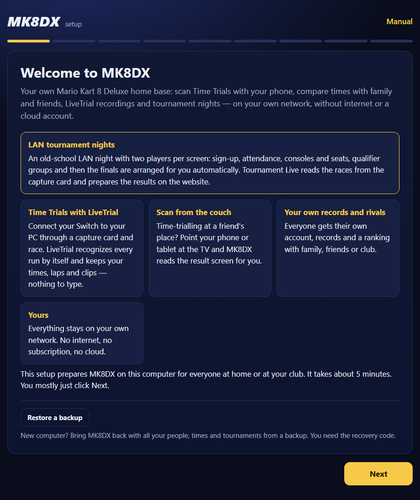
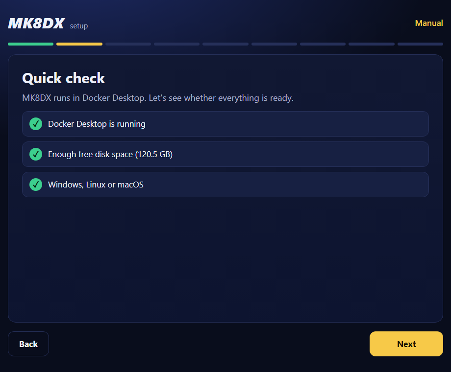
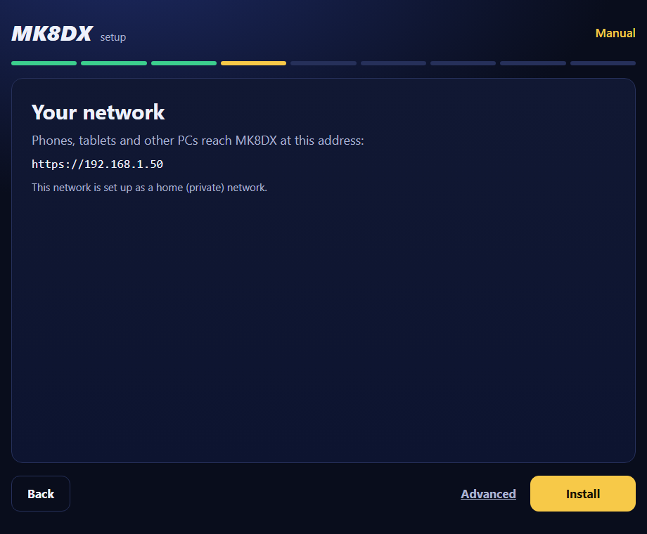
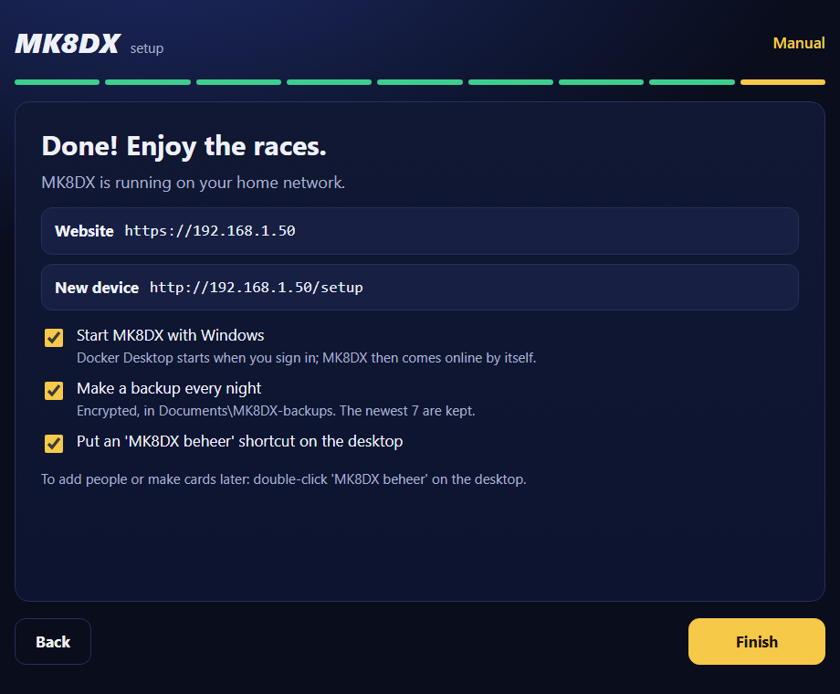
4. The recovery code and the backup folder
A backup is a spare copy of everything in MK8DX: people, times, tournaments and settings. MK8DX makes a backup every night at 03:00 and keeps the newest 7. The backups are encrypted: without the key they cannot be read.
The recovery code is that key. It is five groups of four letters and digits, for example ABCD-EFGH-JKLM-NPQR-STUV. You only need it to restore a backup on another computer.
- Do after Finish, look at the MK8DX recovery code card.You see the code, the sentence "A backup cannot be opened without this code. It is shown only once." and below it the folder the backups go to.
- Do copy the code onto paper or click Print cards to print this page. Check it letter by letter.You see the code on paper. → Why only once? MK8DX keeps the code protected on this computer for the nightly backup, but never shows it again. If the computer breaks, only the paper is left.
- Do keep the paper in a safe place, not next to the computer. Whoever has the code and a backup can open everything.
Where the backups are:
- Windows: in the Documents folder, folder
MK8DX-backups(on disk:C:\Users\<your name>\Documents\MK8DX-backups). - Linux and macOS: in your home folder, folder
Documents/MK8DX-backups(so~/Documents/MK8DX-backups). Even on a Linux in another language that folder is called Documents. - The setup shows the exact folder under the recovery code.
Now and then copy the MK8DX-backups folder to a USB stick or another drive. Otherwise, if the computer breaks, the backups are only on that broken computer.
If you untick Make a backup every night, you get no recovery code and no backups are made. If you switch it on again later in MK8DX beheer and click Finish, you see your recovery code at that moment.
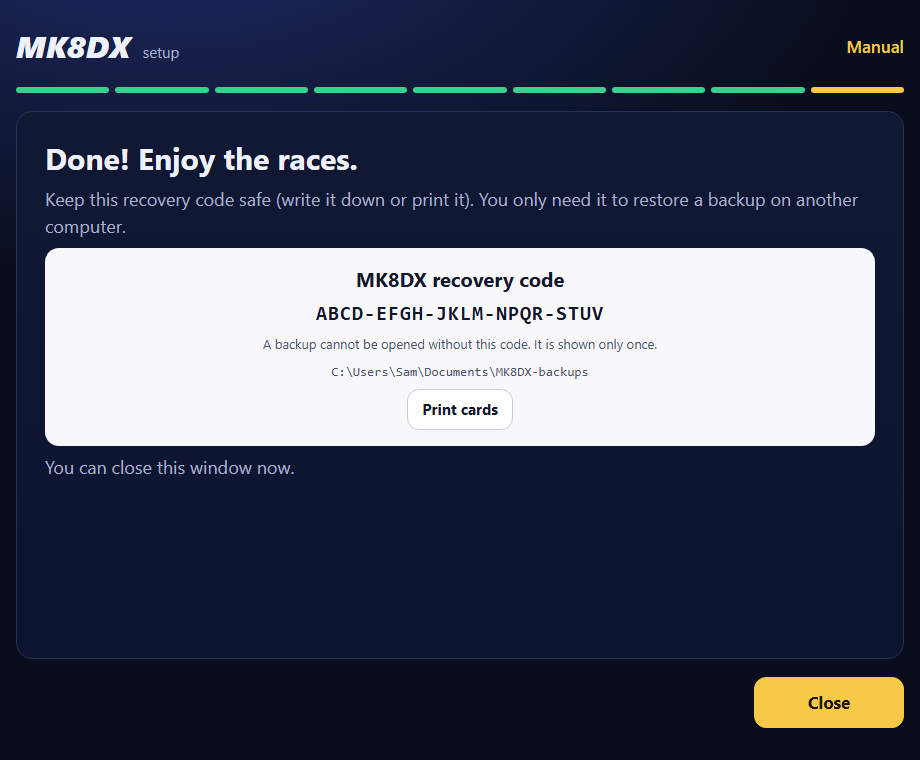
5. People and sign-in cards (MK8DX beheer)
MK8DX beheer (Dutch for "MK8DX administration") is the same page as the setup, but for later: adding people and making sign-in cards. It only works on the MK8DX computer itself. The desktop shortcut is called "MK8DX beheer" in every language; the page title in English is MK8DX administration.
An account is who signs in. A Player is the player on the rankings, with their times. After signing in, everyone chooses or claims their own Player on the website. Names are never linked automatically.
Opening MK8DX beheer
- Do (Windows): double-click MK8DX beheer on the desktop. That shortcut starts the same thing as Start-MK8DX-LAN.cmd. → You see: the black window and then, in the browser, the page with "administration" at the top and the title MK8DX administration. → See something else? No shortcut: double-click Start-MK8DX-LAN.cmd in the MK8DX folder.
- Do (Linux): start MK8DX beheer from the desktop or from the app menu. On some Linux desktops you first have to allow such an icon (right-click it and choose the option to allow launching). It also works with
sh tooling/start-mk8dx.shin the MK8DX folder, as in chapter 3. → You see: a terminal and then the MK8DX administration page. - Do (macOS, not tested): double-click MK8DX beheer.command on the desktop, or start
sh tooling/start-mk8dx.shas in chapter 3. → You see: Terminal and then the MK8DX administration page.
Adding people
- Do type the names at Names (one per line) and click Add.You see the names under "In this installation:".
- Do click Next.You see "Sign in on phones and PCs" in two steps: Step 1 · Prepare the device with the Prepare a device card (once per device, it does not sign you in yet) and Step 2 · Sign in as the right person with, for every person, a box with the Make card button.
Making and printing cards
- Do click Make card next to a person.You see a QR code with "Valid until" and a time. A card works once and for 15 minutes. Let the person scan it right away (chapter 6), or print it.
- Do first make the cards you want and then click Print cards.You see your browser's print window with every card on the screen, including the Prepare a device card.
- Do also make a card for yourself (the name with "(administrator)") if you want to sign in on your phone.
Replacing or revoking a card
- New card: makes a new card for that person. The person's previous card on this screen then stops working.
- Revoke card: the card stops working at once. You see "Revoked: this card no longer works." Use this when a card is lost or went to the wrong person.
- You can only revoke a card that is still on this screen. If you already closed MK8DX beheer, an unused card expires by itself after 15 minutes. If it may have been used already, choose Sign out everywhere below.
Signing someone out everywhere
- Do open MK8DX beheer. On the first screen every person has a Sign out everywhere button. Click it.You see the button changes to Sure? Click again.
- Do click once more.You see "Signed out on every device. A new card lets this person sign in again." That person is now signed out on the website and in the app, one-tap switching to that account disappears and open cards of that person stop working.See something else? Next to your own name it says "Sign yourself out from the account menu on the website ('Sign out on all devices')."
Closing MK8DX beheer
- Do click Next until "Done! Enjoy the races.", leave the ticks on, click Finish and then Close.You see "You can close this window now." MK8DX keeps running.
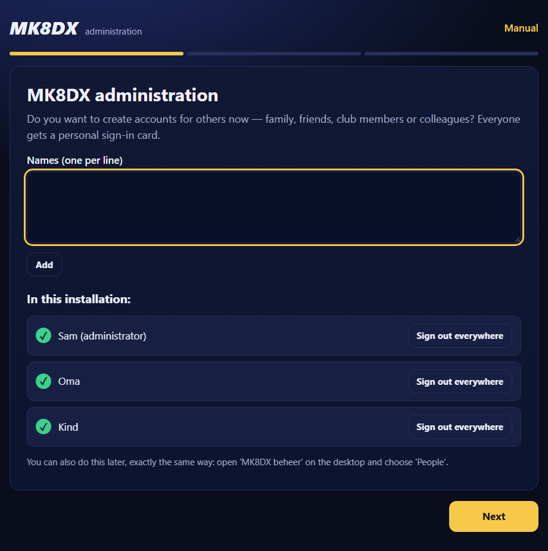
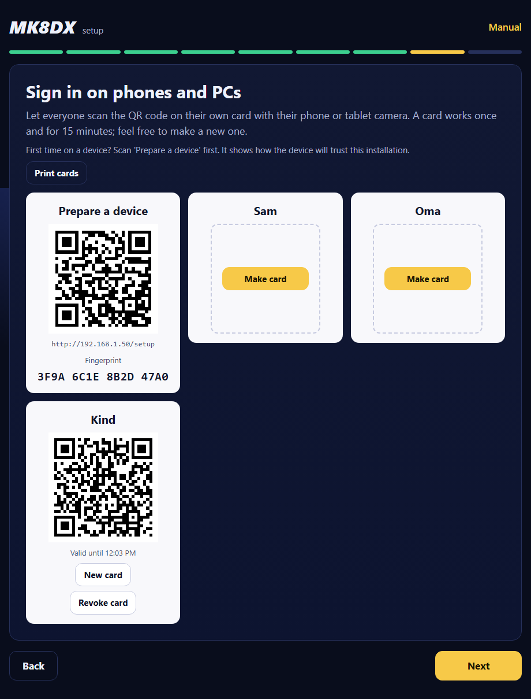
6. Preparing a device and signing in
A certificate is a digital proof of identity. With it a phone knows for sure that it is talking to your MK8DX computer and nothing else, and the connection is encrypted (https). Because MK8DX works without internet, the setup makes its own certificate. Every device has to learn to trust it once. The fingerprint is a short code that belongs to exactly this certificate; with it you check that you install the right certificate.
Why a certificate, even at home without internet?
- Knowing for sure it is your MK8DX. On a home or club network, anyone on the same Wi-Fi can pretend to be your MK8DX computer, for example a guest with a laptop. Without a certificate your phone cannot tell the difference. With the certificate the browser refuses any other computer.
- Nobody listens in. Sign-in cards, your sign-in session and everything you enter travel encrypted over the Wi-Fi.
- Why MK8DX makes its own certificate. Websites on the internet use certificates from well-known issuers that are already in every device. They do not issue certificates for a home address like
192.168.1.50and do not work without internet. So MK8DX makes its own certificate during installation, and you tell each device once that it may trust it. - What you allow by installing it. The certificate is meant only for MK8DX's private network addresses, and its secret key stays protected on the MK8DX computer. Install only the certificate of your own MK8DX (check the fingerprint) and remove it from a device when you no longer use that installation.
What does not work if you do not install the certificate?
- The browser shows a full-page warning on every visit, such as "Your connection is not private". You can click it away, but do not: you can then no longer see whether you are really talking to your MK8DX.
- Even after clicking it away, browser notifications do not work: the browser allows them only with a trusted certificate. Other browser features may refuse too.
- What does work without an installed certificate: the Android app. It learns the certificate itself from the Prepare a device card (chapter 7). A browser on the same device still needs the certificate.
The MK8DX computer itself
The computer MK8DX runs on must trust MK8DX once too, otherwise its browser warns about the website.
- Do open MK8DX beheer, click Next until "Sign in on phones and PCs" and look at the This computer block under Step 1.You see "This computer already trusts MK8DX." Then you are done.See something else? If it shows the Prepare this computer button, go to step 2.
- Do click Prepare this computer.You see a Windows window, Security Warning, asking whether you want to install the certificate, with a thumbprint (sha1). Compare it with the thumbprint in MK8DX beheer; if they match, click Yes.You see "This computer already trusts MK8DX."See something else? If you clicked No or the thumbprints differ: do not click Yes, close the window and ask for help. On Linux or macOS, instead of the button it says to open the address under Prepare a device in this computer's browser; then follow the steps below on this computer.
Once per device: Prepare a device
- Do connect the phone, tablet or PC to the same Wi-Fi or wired network as the MK8DX computer. On a phone, do not use mobile data instead of Wi-Fi.You see the name of your own Wi-Fi at the connection.
- Do with the camera, scan the QR code on the Prepare a device card (in MK8DX beheer or on paper) and tap the link that appears. Without a camera, type the New device address in the browser, for example
http://192.168.1.50/setup.You see the Prepare this device page with "Do this once per phone, tablet or PC. Afterwards, scan your personal sign-in card."See something else? If the page does not open: check the network and that the MK8DX computer is on (chapter 11). - Do compare the code under "First check this code." with the Fingerprint on the Prepare a device card (four groups of four characters).You see exactly the same code.See something else? If the code differs, install nothing. You may be on another network or another address; check that first.
- Do follow the part for your device. The part for the device you are using is already open; for another device, open it under "Another kind of device?". Tap Download certificate (iPhone and iPad: Download profile) and follow the steps below.You see at the bottom "Done? Scan your personal sign-in card, or open" with the website address.
The steps on the Prepare this device page:
- Android: tap the button to download the certificate. Open Settings and search for "certificate" (often: Security → More security settings → Encryption & credentials → Install a certificate → CA certificate). Choose the downloaded MK8DX file and confirm with your PIN. Menu names differ per phone brand.
- iPhone and iPad (not yet tested with this installation): tap the button to download the profile and allow it. Open Settings → Profile downloaded → Install. Then Settings → General → About → Certificate Trust Settings → turn on MK8DX.
- Windows: download the certificate and open it. Choose Install Certificate → Current User → Place all certificates in the following store → Trusted Root Certification Authorities. Do not choose Intermediate Certification Authorities. Restart the browser.
- Mac (macOS is not yet tested end to end): download the certificate and open it; Keychain Access opens. Open the MK8DX certificate → Trust → Always Trust.
- Linux (not yet tested end to end for this route): add the same certificate to your distribution's or browser's trusted root store. The exact steps differ by distribution.
Signing in with your personal card
- Do scan your own card (the card with your name) and tap the link.You see Join this MK8DX installation and "First check that this HTTPS address belongs to the host you trust. The invitation can be used once." The browser's address bar must show the website address, for example
https://192.168.1.50.See something else? A browser warning about the certificate or an insecure connection: never click it away. Do Prepare a device above first. - Do check the name of the card under You sign in as:. If it is your name, wait for "Invitation ready. Confirm to sign in." and tap Accept invitation. If it shows another name, do not tap accept: the card stays valid for the right person.You see "You are signed in as" with your name, and Continue to MK8DX. Tap it.See something else? "This invitation is invalid. Ask the administrator for a new QR code." or "Sign-in failed. Ask the administrator for a new invitation.": the card was already used, expired or revoked. Let the administrator make a New card.
- Do follow the welcome steps on the website: whether you already have times or tournaments here, and what you want to be called. That is how you choose or claim your own Player.You see your name and your times.See something else? If the name on your card (for example 'Dad') is not filled in already: that is right. The name on the card is only the label in MK8DX administration; you choose your player name here yourself.
Another device for the same person
- A player can make a card themselves: the account menu on the website has Sign in on another device too. It opens Sign in on another device with a card that "Works once, valid until" a time. Scan it with the other device. Show it only to your own device: whoever scans it is signed in to your account.
- Administrators do not have that button. They make a New card for themselves in MK8DX beheer.
- A new device always does Prepare a device once first.
- No camera, or signing in on the MK8DX computer itself? Make that person's card in MK8DX beheer and click Sign in on this computer (opens the sign-in page in the MK8DX computer's browser) or Copy link. Send a copied link only to that person themselves, for example in a private message: whoever opens it can sign in as that person. It works once and for 15 minutes. On the Prepare a device card, Copy address copies the address; it is not secret.
Leaving this installation on a device: remove the certificate again in the same settings you used to install it.
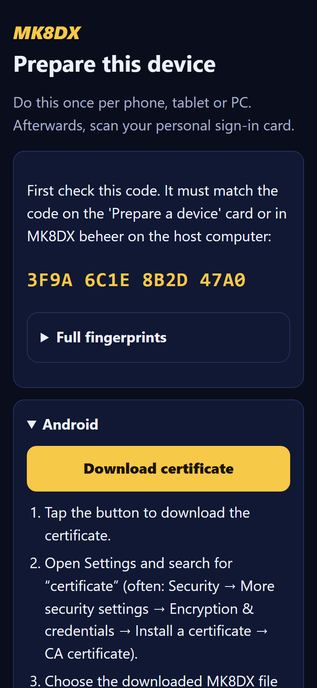
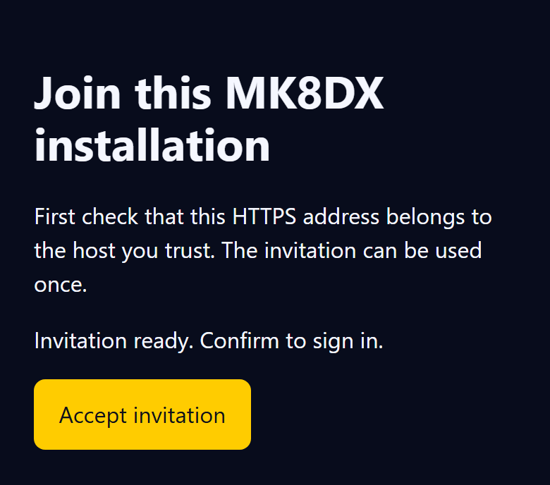
7. The Android app and LiveTrial
Pairing the Android app
This needs app version 2.95.0 or newer. The app does not need the certificate in Android's settings, but signing in goes through the phone's browser. So first do chapter 6 on this phone: Prepare a device and sign in with your card in the browser.
- Do open the app. On a new install it starts on Choose your community; otherwise tap the community name at the top of the app and then Add a community.You see Choose your community with the panels At home or at the club and Online community. Under At home or at the club tap Scan the QR code.
- Do if needed tap Use the camera and allow the camera. Scan the QR code on the Prepare a device card.You see Check that this is your installation with an Address and a Key fingerprint (SHA-256).See something else? "This is not the QR code of a Prepare a device card.": you scanned a personal card. Scan the Prepare a device card. If scanning fails, type the New device address (for example
http://192.168.1.50/setup) at Or paste the setup link and tap Next. - Do compare the address with the website address, and the long key with the Prepare this device page: open Full fingerprints there and look at "Root public key SHA-256 (SPKI)". You can open that page on another device, or on the MK8DX computer itself through the New device address.You see both exactly the same. Tap Connect (when the app was already set to another server, confirm the change).See something else? If they differ, tap Back and do not connect. "Could not get a matching certificate from": check the network and that the MK8DX computer is on, and try again.
- Do in Settings, at Player on this phone, tap Sign in. The app reminds you that at home or at the club you sign in with your personal sign-in card, not with email. Tap Sign in to synchronize.You see the browser opens the approval page. Check that the site shows the same code as the app and approve the device. Go back to the app.See something else? If the browser asks you to sign in, first sign in with your card (chapter 6).
- Do post a time in the app.You see the time on the installation's website.
Unpairing: tap the community name at the top → Add a community → Forget this installation.
Club and home in one app: the app can hold several communities. Tap the community name at the top and then Switch; each community keeps its own account and unsent times. Your own times are under your name → My times, also when the phone cannot reach the MK8DX computer.
LiveTrial on a second Windows PC
LiveTrial is a Windows program that recognizes and keeps your Time Trials through a capture card (a box that sends the picture of your Switch to the PC). Installing LiveTrial itself is described in chapter 6 of docs/install/MK8DX_User_Guide_EN.txt. Tested on a test installation with LiveTrial 3.37.0. The steps in short:
- First let that PC trust the installation: chapter 6, Windows part. Check that the website opens in the browser without a warning.
- Make sure your account has a Player on the website.
- Open LiveTrial, click the gear (Settings) and enter the website address at Community website address, for example
https://192.168.1.50. - Click Sign in and choose Open the approval page. Approve the device in the browser.
- Send runs with Send now, or turn on Send new runs automatically in Settings.
Good to know: without a Player, LiveTrial's sign-in ends with a message to set up your Player on the website first. After you change the address LiveTrial restarts; if it does not, quit it and open it again. Accounts and waiting runs for another server stay with that server. When you stop using this PC with the installation, remove the MK8DX certificate from Trusted Root Certification Authorities again (chapter 6).
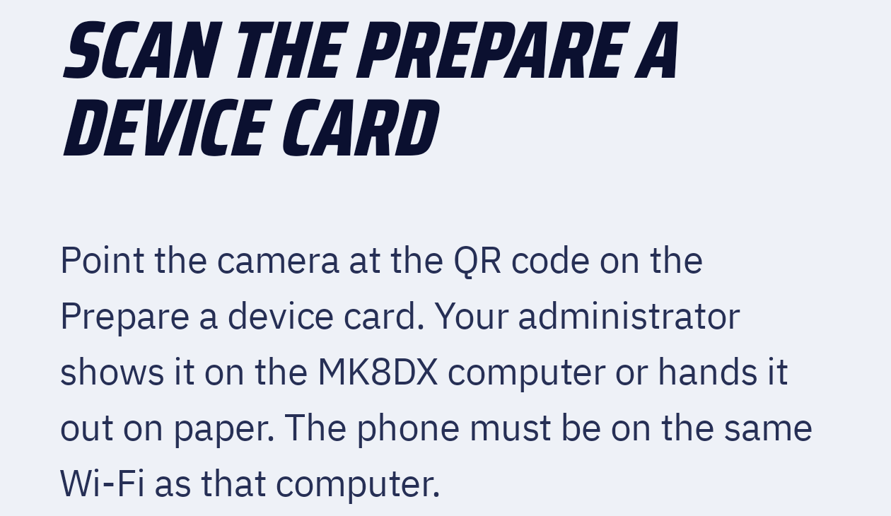
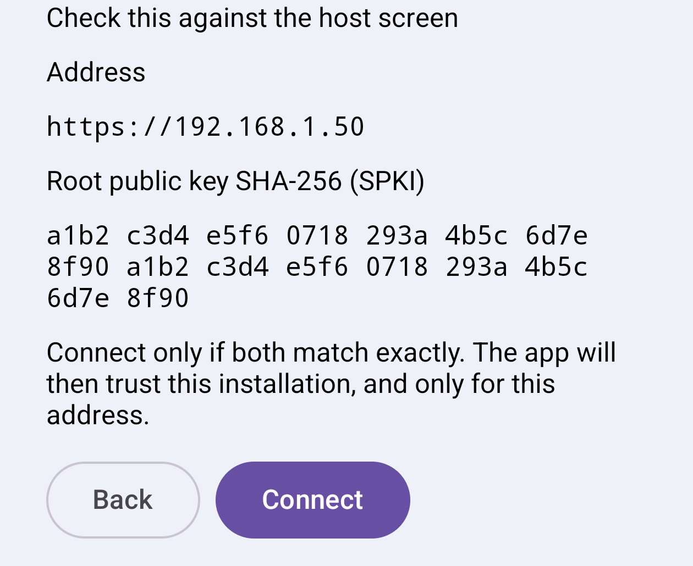
8. Everyday use
The MK8DX computer must be on. As long as someone wants to play, the MK8DX computer must be on, awake and connected to the network. Preferably switch sleep off during a play evening. Docker must be running; on Windows and macOS Docker Desktop starts by itself when you sign in (chapter 10).
One phone or tablet for the whole family
- Everyone signs in once with their own card on that device.
- Website: after that you switch with one tap from the account menu: choose Switch account and then the person.
- PIN: anyone can set a 4-digit PIN on the website under Settings → PIN for switching accounts. Switching to that account then asks for that PIN first.
- Android app: tap your name at the top → Switch Player (or Settings → Player on this phone), and choose the person with Switch. If that person has a PIN, the app asks PIN required and PIN (4 digits). A wrong PIN gives "That PIN is not right."
- Administrators are in that list only when they have set a PIN (Settings → PIN for switching accounts). Without a PIN they sign in afresh with a card. It is stricter for an administrator: after the 5th wrong PIN the administrator account disappears from that device, and also after 14 days without use; then a card is needed again. In the Android app administrators are not in the list (yet).
Signing out
- On the website from the account menu at the top right: Sign out (this device only) or Sign out on all devices.
- Signing someone else out everywhere is done by the administrator in MK8DX beheer with Sign out everywhere (chapter 5).
Card lost or phone lost
- Card lost that has not been used yet: Revoke card if it is still on the screen in MK8DX beheer; otherwise it expires by itself after 15 minutes.
- Phone lost, or a card may already have been used: in MK8DX beheer choose Sign out everywhere next to that person and click again. Then give the person a New card.
Light or dark: on a new device the website follows that device's System setting. After signing in, choose Account → Settings → Appearance → Dark for the dark look; that choice is saved with your account.
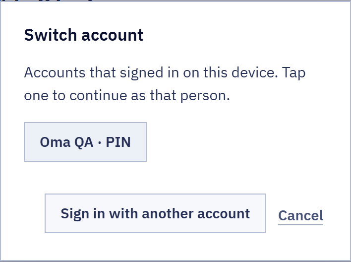
A name for your community: an administrator can give the installation a name, such as "Club Noord", on the website under Administration → Installation settings → Community name, and click Save name. The apps then show that name instead of the web address. Leave the field empty and save to remove the name again.
Times from other communities: someone who also plays in another community (another club, or a site on the internet) can carry their times here from the Android app. An administrator chooses on the website under Administration → Installation settings → Times from other communities: Off (the default: such times are refused), With approval (each carried time stays out of sight until an administrator clicks Publish next to it under Administration → Time Trials) or Allowed. A carried time always shows where it came from.
9. A tournament night
This chapter is only an overview. The real steps are in the manuals named below. You run a tournament night on your installation's website; the Director is the person who leads the night.
- The night on the website: steps 0 to 10 (participants and attendance, consoles, groups and seats, scores, finals and finishing) are in
docs/guides/TOURNAMENT_DIRECTORS.md(in the repository on GitHub; not in the package) and in chapter 6 "Use Android, LiveTrial, the scanner, and Tournament" ofdocs/install/MK8DX_User_Guide_EN.txt(in the package). - Tournament Live: a Windows program that reads the races from a capture card. See
docs/product/README_TOURNAMENT_LIVE_LAPTOP.mdin the repository. - Tournament Processor: reads a recorded video (.mp4 or .mkv) and turns it into Excel, CSV and result files. See
docs/product/README_TOURNAMENT_PROCESSOR_FALLBACK_LAPTOP.mdanddocs/product/USING_MK8DX_TOURNAMENT_TOOLS.mdin the repository. - Excel or CSV as a fallback: on the website you can also enter scores by hand or import them from an Excel/CSV file. You need no extra program for that.
- Recognition never makes a result official by itself. The Director checks and confirms every race.
- Not tested yet: connecting the Tournament Tools to a home or club installation is not described or tested yet. You can import result files from the Processor or Tournament Live through the website.
10. Backups, a new computer, a new address, restarts and updates
Keeping backups
- Do now and then plug a USB stick into the MK8DX computer and copy the whole
MK8DX-backupsfolder (chapter 4) onto it.You see on the stick a folderMK8DX-backupswith folders that start with a date, for example20261111-030000. - Do keep the stick and the paper with the recovery code in different places.
Restoring on a new computer
This only works on a computer where MK8DX is not installed yet.
- Do prepare the new computer as in chapter 2.You see Docker runs and Python works.
- Do copy the
MK8DX-backupsfolder from your USB stick into the Documents folder (Windows) or~/Documents(Linux and macOS). Or leave the USB stick plugged in.You see theMK8DX-backupsfolder on the new computer or on the stick. - Do unpack the MK8DX package and start it as in chapter 3. On the welcome screen click Restore a backup.You see "Quick check" and then Restore a backup with "Choose the backup and enter the recovery code you wrote down during the first installation."
- Do choose the backup (the newest is at the top, with date and time).See something else? "There is no MK8DX backup in this folder." (that message names the Windows folder, also on Linux and macOS): type the folder with the backups at Another folder (for example a USB stick): and click Search. That field also appears when you click Advanced.
- Do type your code from the paper at Recovery code. Spaces, lower case or leaving out the dashes do not matter. Click Next.You see "Your network". The Next button only works once the whole code is entered.
- Do check the address as in chapter 3 and click Restore.You see "Opening and restoring the backup" and then "MK8DX is running again, with everything from the backup." On Windows, Windows asks for permission once again: click Yes.See something else? "This recovery code does not open the backup. Check the code and try again.": click Back twice until you are back at the recovery code, correct the code (or choose another backup) and try again.
- Do click Next through MK8DX beheer until "Done! Enjoy the races." and click Finish.You see "New backups use the same recovery code as before." Your paper code stays valid.
- After restoring: everyone, all times, tournaments and settings are back. Phones and PCs keep trusting MK8DX. If the new computer has a different address, everyone scans the Prepare a device card once and signs in again; pair apps again (chapter 7).
Another network address
Your router gives the MK8DX computer its address. Usually it stays the same, but that is not guaranteed: after a new router, a power cut or when the computer was off for a long time, or on another network (for example at the club), the address can change. Then MK8DX has to move and everyone scans the card again. A fixed address prevents that.
Give the computer a fixed address (recommended, once)
A fixed address is best arranged in the router, with a DHCP reservation: the router then keeps one address for this computer and never gives it to another device.
- Do find the computer's address and physical address. Windows: open Command Prompt, type
ipconfig /alland press Enter. Linux: typeip -br addrandip -br link.You see for the connection you use (Wi-Fi or Ethernet) an IPv4 Address (for example192.168.1.50) and a Physical Address (also called MAC address, for example3C-52-82-AB-CD-EF). Cable and Wi-Fi each have their own physical address: take the one of the connection the computer really uses (preferably a cable). - Do open your router's settings in the browser. The address and the password are often on a sticker on the router (for example
192.168.1.1or192.168.0.1). - Do find the reservation. The name differs per brand, for example "DHCP reservation", "Address reservation", "Static IP", "Static lease" or "Always assign this device the same IPv4 address". It is usually under LAN, Network, DHCP or Home network, next to the list of connected devices.
- Do choose the MK8DX computer in the list (or enter its physical address), keep its current address and save.You see the computer is in the list of reservations.
- Do restart the computer and check with
ipconfigthat the address stayed the same. If it is the address MK8DX already uses, there is nothing else to do. If you chose another address in the router, move MK8DX as below.
Avoid an address conflict
An address conflict happens when two devices use the same address. One of them (sometimes the MK8DX computer) is then unreachable now and then or all the time; Windows sometimes says "There is an IP address conflict".
- Use a reservation in the router, not an address you type yourself in the network settings of Windows or Linux. The router does not know a typed-in address: it can later give it to a phone or a console.
- If you cannot reach the router (for example at the club) and it has to be manual: choose an address outside the range the router hands out (the "DHCP pool"; if the router hands out
192.168.1.100to192.168.1.199, choose for example192.168.1.50) and first check that nobody uses it:ping 192.168.1.50must get no reply. Copy the subnet mask, gateway and DNS the router gave. Preferably ask whoever manages that network. - Let only one device hand out addresses in a network. Two routers behind each other (for example your provider's modem and your own Wi-Fi router) are two networks: put the MK8DX computer and all phones in the same network, or switch the second router to access point mode.
- After a conflict: give the other device another address (or the MK8DX computer a reservation) and open MK8DX beheer. If you see This computer has a new network address, follow the steps below.
Moving to a new address
- Do if the computer got another address anyway, open MK8DX beheer (chapter 5).You see This computer has a new network address with "MK8DX was on" the old address and the new address below it.
- Do click Move. With Advanced you can choose another address if needed.You see "Moving to the new address (Windows asks for permission)"; click Yes in the Windows window. Then "MK8DX runs on the new address."
- Do click Next and continue as in MK8DX beheer. Let phones and PCs scan the Prepare a device card once and sign in again; pair apps again. They keep trusting MK8DX; the Prepare a device card now has the new address.
After the computer restarts
- Windows: the "MK8DX start" task starts Docker Desktop as soon as you sign in to Windows; MK8DX then comes online by itself. So someone has to sign in: if the computer sits at the sign-in screen after a Windows update, MK8DX is only reachable again after signing in.
- Linux: Docker Engine starts when the computer boots (thanks to
sudo systemctl enable --now dockerfrom chapter 2B), and MK8DX comes along by itself. - macOS (not tested): a sign-in task opens Docker Desktop when you sign in.
Nightly jobs
- At 03:00 MK8DX makes the backup. At 03:30 MK8DX renews its own certificate when needed; you do not notice that.
- Windows: if the computer was off or asleep, missed jobs run as soon as possible afterwards. The backup then waits until Docker runs.
- Linux: the jobs run as your user. A missed job still runs as soon as you are signed in again.
- macOS (not tested): a missed job runs as soon as the Mac wakes from sleep.
Updates
- Do download the new MK8DX package and unpack it into a new folder, just as in chapter 3 (including unblocking). Keep the old folder for now.You see a second folder with
Start-MK8DX-LAN.cmd. - Do double-click
Start-MK8DX-LAN.cmdin the new folder.You see first the programs loading with a running clock, then in the browser A newer version of MK8DX with the old and the new version.See something else? If MK8DX beheer simply opens, this version is already running. If it says the package is older than the installation, use the newest package. - Do click Update.You see "Making and checking a backup" and then "Installing and starting the new version", each with a running clock; after a few minutes MK8DX is updated with the old and the new version. All people, times, tournaments and sign-ins are kept; phones do not need to do anything again. The automatic backup, the certificate renewal and the MK8DX beheer shortcut have already moved to the new folder. The backup from just before is in Documents\MK8DX-backups with
before-updatein its name. The black start window saysOK MK8DX update completed.See something else? If the start window saysMK8DX update FAILEDwith a reason, or the browser shows an error: read the reason, fix it (for example start Docker Desktop) and start again from the new folder. - Do click Close. If you want to arrange something else afterwards, first click Go to MK8DX beheer.You see the browser window closes; press a key in the start window to close it.
- Do then delete the old folder.You see MK8DX keeps working.
Other installation routes (one computer, your own server, web hosting) are in docs/install/MK8DX_User_Guide_EN.txt.
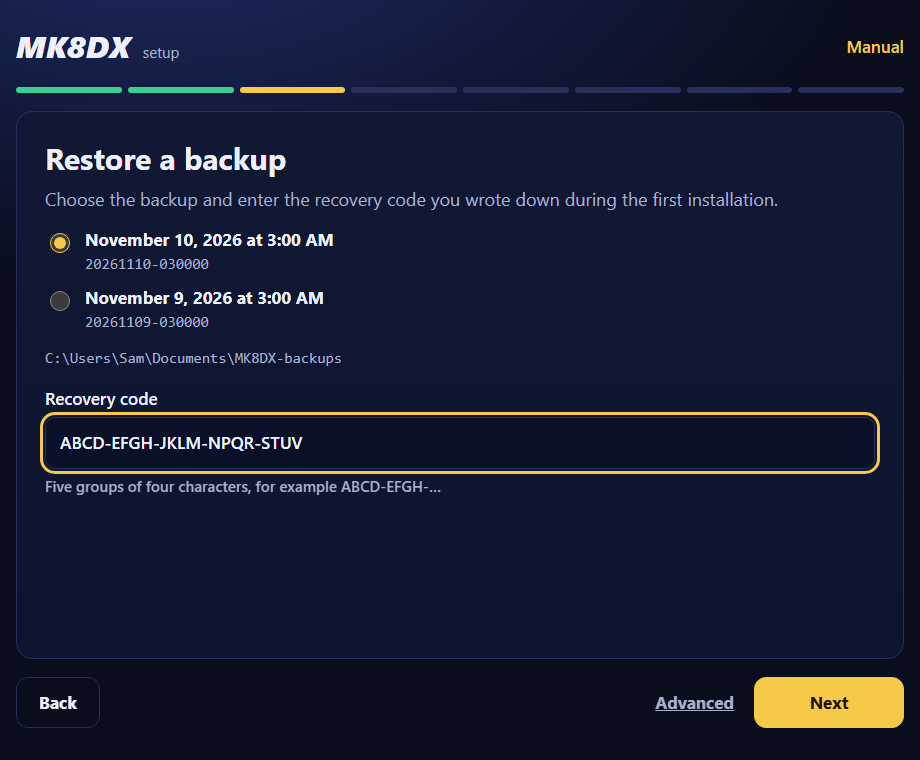
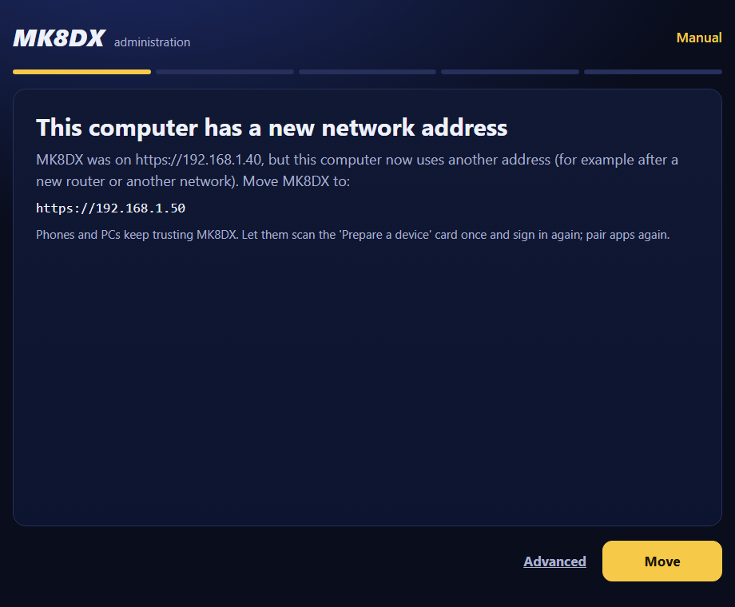
11. Troubleshooting
- A phone cannot open the website. Is the phone on the same Wi-Fi network (not on mobile data and not on a guest network)? Is the MK8DX computer on, awake and signed in, and is Docker running? Does the address match Website from chapter 3? Linux: did you run the firewall command from chapter 3? Does the computer have a new address: see below.
- The browser warns about the certificate. Do not click the warning away. Do Prepare a device on that device (chapter 6) and check the fingerprint.
- A card no longer works. A card works once and for 15 minutes, and stops working after Revoke card, New card or Sign out everywhere. Make a new card in MK8DX beheer.
- "This recovery code does not open the backup." Check the code letter by letter; upper case, lower case, spaces and dashes do not matter. The code never contains the letters I and O or the digits 0 and 1. Also choose the right backup: a backup of another installation does not open with your code.
- "MK8DX is already installed on this computer; restore needs a computer without it". Restoring only works on a computer without MK8DX. Ask an IT person for help (chapter 12).
- Docker is not running. Windows and macOS: start Docker Desktop, wait for Engine running and click Try again, or start MK8DX again. Linux:
sudo systemctl start docker. - The computer has a new address. Open MK8DX beheer and choose Move (chapter 10).
- Windows: "The network is 'DomainAuthenticated'; ask its administrator to allow TCP 80/443". The computer is on a company network that MK8DX may not change by itself. Ask the administrator of that network to allow incoming connections on TCP ports 80 and 443.
- Windows: "Windows did not allow the change (the permission prompt was declined or failed)". Click Try again and then Yes in the Windows window.
- Linux: phones cannot get in and the firewall is active. During Install click Details and run the command after "manual:", for example
sudo ufw allow from 192.168.1.0/24 to 192.168.1.50 port 80,443 proto tcp. With firewalld it issudo firewall-cmd --permanent --add-service=http --add-service=https && sudo firewall-cmd --reload. - The Android app says "This is not the QR code of a Prepare a device card." Scan the Prepare a device card, not a personal card.
12. For IT people (optional)
This chapter is not needed for normal use.
Where the private data is
- Windows:
%LOCALAPPDATA%\MK8DX\LAN(Start-MK8DX-LAN.cmd passes that folder). - Linux:
~/.local/share/mk8dx/LAN(or$XDG_DATA_HOME/mk8dx/LANwhen that variable is set). - macOS:
~/Library/Application Support/MK8DX/LAN. - Next to that folder is a private Python environment
python-offline-<code>with the included Python packages: on Windows withScripts\python.exe, on Linux and macOS withbin/python. Use that Python for the commands below. - Never share this folder or the backups. Secrets are protected with DPAPI on Windows, in the Keychain on macOS and with
systemd-creds --useron Linux where available, otherwise only by file permissions.
Commands (run in the package folder, with the Python above and --state-dir pointing to the private data folder):
tooling/install.py status --state-dir <folder>: checks that profile, certificates and settings agree.tooling/install.py check --state-dir <folder>: status plus the Docker Compose settings and the containers.tooling/auto_backup.py run --state-dir <folder>: makes an encrypted backup now with the stored recovery code, like the nightly job (with--backup-root <folder>in another folder). Note:install.py backupis for other routes and does not make an A2 backup.tooling/install.py maintain-ca --qa-offline-candidate --state-dir <folder>: renews the certificate when due and otherwise does nothing;--force-ca-rotationrenews at once.tooling/install.py change-lan-address --lan-bind-address 192.168.1.51 --qa-offline-candidate --state-dir <folder>: moves to a new address, like Move.tooling/install.py stop --state-dir <folder>andtooling/install.py start --qa-offline-candidate --state-dir <folder>: stop and start.tooling/install.py upgrade --backup-output <new folder> --qa-offline-candidate --state-dir <folder>: first makes and verifies a backup, then applies database updates and restarts the containers with the images this installation was set up with. Switching to the images of a newer package is not part of it yet, and this route is not tested for A2.tooling/setup_wizard.py --state-dir <folder>: the setup page itself;--no-browseropens no browser.--qa-offline-candidateis the internal flag with which an A2 package switches on its own offline functions; the setup page and the start file pass it themselves.
Scheduled jobs and network
- Windows (Task Scheduler): "MK8DX backup" (03:00), "MK8DX certificate renewal" (03:30) and "MK8DX start" (at sign-in), all three for the signed-in user without administrator rights.
- Linux: systemd user timers
mk8dx-mk8dx-backup.timerandmk8dx-mk8dx-certificate-renewal.timer(with Persistent=true). - macOS: LaunchAgents in
~/Library/LaunchAgentswith names starting withnl.mariokart8.mk8dx-. - The website listens on TCP 80 and 443 of the chosen address. The administration page listens only on
127.0.0.1of the MK8DX computer itself. - Windows: the firewall rule
MK8DX-A2-offline-<address>allows TCP 80 and 443 on that address, for the Private profile only. A public network is marked private; a domain network is never changed. - Linux: MK8DX never asks for sudo itself. With an active ufw or firewalld the setup shows the command; without an active firewall there is nothing to do. macOS: Docker Desktop opens the ports itself.
- If a restore fails halfway, the half-made installation is set aside in a folder next to the private data with
.failed-and a time in its name, so you can try again.
Nothing found.